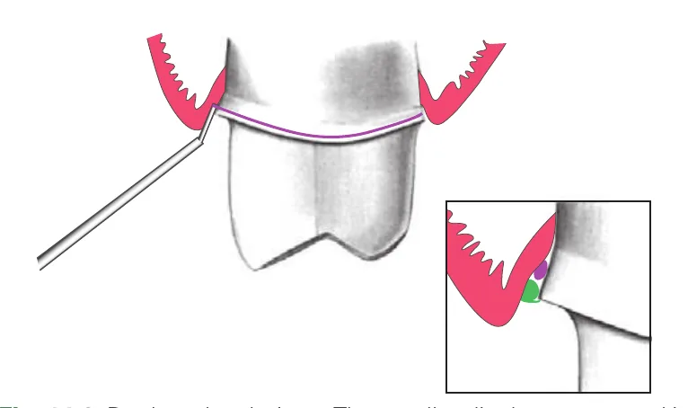

نسخه استخراجشده؛ ترجمه یا تأیید علمی انجام نشده است. وضعیت: captured
سه راه جابهجایی بافت: مکانیکی (نخ، فوم یا خمیر)، شیمیایی (موادی مانند سولفات آلومینیوم یا اپینفرین که «انقباض موضعی بافت نرم» میسازند)، و جراحی (کورتاژ، برش با تیغ، الکتروسرجری یا لیزر).
و سازوکار مکانیکی نخ: «نخ درون سولکوس رانده میشود و فیبرهای پریودنتال محیطی را بهطور مکانیکی میکشد.» و انتخاب جنس: نخ بافته یا کشباف جایگذاری را آسانتر میکند.
ولی یک محدودیت جنس: «اندازههای بزرگتر نخ بافته باید اجتناب شوند چون تمایل دارند دولا شوند و بدین ترتیب برای جایگذاری غیرتروماتیک درون سولکوس بیش از حد ضخیم گردند.» و در سولکوسهای بسیار باریک، «نخهای پشممانند که میتوانند تخت شوند» برای جابهجایی جانبی اولیه ترجیح دارند.
و مهمترین عدد این درس: «حتی با این حال، پس از برداشتن نخ، سولکوس بهسرعت — کمتر از ۳۰ ثانیه — بسته میشود؛ بنابراین قالب باید بلافاصله گرفته شود.»
و مواد کنترل ترشح: «کلرید آلومینیوم و سولفات فریک مناسباند چون حداقل آسیب بافتی میسازند.» و یک جایگزین غیرمنتظره: «قطرهی چشمی حاوی آمین سمپاتومیمتیک (تتراهیدروزولین ۰٫۰۵ درصد) یا ضداحتقان بینی (اکسیمتازولین ۰٫۰۵ درصد) مؤثر نشان داده شده است.»
و مسئلهی pH پایین و لایهی اسمیر: «بسیاری از مواد شیمیایی که برای اثر قابضشان به کار میروند تنها در بازههای باریکی از pH پایین پایدارند.» و نگرانی: اثر محلولهای اسیدی بر ساختار دندان و «شاید مهمتر، بر لایهی اسمیر».
و نتیجهگیری عملی از آن: «جابهجایی بافت زمانوابسته است؛ چون چند دقیقه باید بگذرد تا جابهجایی کافی انجام شود، در بیشتر شرایط باید فرض کرد لایهی اسمیر برداشته شده است. بنابراین سیل کردن بعدی توبولهای عاجی ممکن است برای به حداقل رساندن خطر حساسیت پس از عمل مطلوب باشد.»
و دربارهی اپینفرین — چهار نکتهی احتیاطی: «اپینفرین باید با احتیاط به کار رود چون ممکن است تاکیکاردی ایجاد کند، بهویژه اگر روی بافت پارهشده گذاشته شود. کنترل دوز نیز مسئلهای بالقوه است.» و شاهد بالینی: «در یک مطالعه، کلینیسینها هیچ مزیتی برای استفاده از نخهای آغشته به اپینفرین نتوانستند تشخیص دهند.»
و آنچه متخصصان در عمل انتخاب میکنند: در یک نظرسنجی، ۵۴ درصد پروستودنتیستها خیساندن نخ در کلرید آلومینیوم بافرشده را ترجیح میدادند، و بیش از ۳۵ درصد بهطور روتین از سولفات فریک یا کلرید آلومینیوم استفاده میکردند. و همان پژوهشگران گزارش کردند تکنیک دو-نخ در تقریباً نیمی از موقعیتهای بالینی به کار میرفت.

مراحل جایگذاری نخ: نخ را در محلول قابض فرو ببر و اضافهاش را با گاز بگیر. نخ آغشته را میتوان خشک جا زد، ولی درست پیش از برداشتن باید در همان سولکوس کمی مرطوب شود «تا اپیتلیوم نازک سولکولار به آن نچسبد و هنگام برداشتن پاره نشود» — و روش کنترل مقدار آب: «آب نگهداشتهشده میان نوکهای پنس با باز کردن آن اعمال شود». نخهای غیربافته را «محکم بپیچان تا جایگذاری آسانتر شود».
و از کجا شروع کنیم: «اغلب آسانترین کار شروع از بیندندانی است، چون عمق سولکولار بیشتری نسبت به فاسیال یا لینگوال در دسترس است.»
و دو زاویهی حیاتی ابزار: «ابزار باید کمی به سمت دندان زاویه بگیرد تا نخ مستقیماً درون سولکوس رانده شود. همچنین باید کمی به سمت نخی که پیشتر جا زده شده زاویه بگیرد؛ وگرنه ممکن است آن نخ جابهجا شود.»
و مهمترین تصویر ذهنی این درس — قیاس خندق دور قلعه: برای ارزیابی کفایت جابهجایی، «کلینیسین باید تراش را از نمای اکلوزال ببیند: باید بتواند لبهی تراش را در تمام محیط، و نواری پیوسته از نخ را ببیند، بدون آنکه بافت لثهی آزاد روی آن تا خورده یا با دندان در تماس باشد. یک قیاس مناسب، خندقی دور قلعه است.»
و دو معیار عددی ارزیابی: «عرض قابل رؤیت نخ بهندرت باید از نصف عرض نخ پیش از جایگذاری تجاوز کند.» و آزمون قطعی: با برداشتن نخ، «کل لبهی تراش باید بهروشنی قابل رؤیت و مستقیماً در دسترس میان ۳۰ تا ۶۰ ثانیه بماند. اگر بافتی زودتر از این به تماس با تراش برگردد، باید به آن ناحیه توجه بیشتری شود.»
و نکتهی دلگرمکننده: «جایگذاری دوم نخ معمولاً نسبتاً سرراست است چون فیبرهای پریودنتال با تلاش جابهجایی اولیه کشیده شدهاند.»
و تکنیک دو-نخ، گام به گام: «یک نخ اولیهی نازک بریده و طوری گذاشته میشود که انتهایش روی هم نیفتد. سپس یک نخ دوم ضخیمتر با قابض اشباع، به روش معمول گذاشته و پس از چند دقیقه برداشته میشود. نخ نازک اولیه حین قالبگیری باقی میماند.»
و شرط موفقیت تکنیک دو-نخ: «این تکنیک نیاز دارد که حدود ۱ میلیمتر ساختار دندانی دستنخورده میان بالای نخ اولیه و لبهی تراش باقی بماند.» و هشدار: «کلینیسین باید مراقب باشد فشار بیش از حد بر بافتها وارد نکند، که میتواند به اتصال اپیتلیالی آسیب بزند.»
و روش درست برداشتن نخ: «نخ را با پنس بگیر و در جهت اکلوزال، با زاویهی کمی به سمت تراش بکش. هدف، به حداقل رساندن کشیده شدن نخ روی سطح داخلی لثهی آزاد است، که خطر خونریزی دوباره را بالا میبرد.» و «مرطوب کردن نخ با چند قطره آب پیش از برداشتن نیز خطر خونریزی دوباره را کم میکند».
و کنترل خونریزی: «خونریزی جزئی گاهی با یک قابض — مانند سولفات فریک ۱۵٫۵ درصد با نوکهای اینفیوزر — یا با تزریق بیحسی موضعی مستقیماً در پاپیلاهای لثهای مجاور قابل کنترل است.»
ولی توصیهی اصلی در خونریزی جدی، عقبنشینی است: بهتر است بافت با تقویت آموزش بهداشت و تجویز دهانشویهی کلرهگزیدین درمان شود «تا اینکه تلاش شود قالبگیری در شرایط نامساعد انجام گیرد».